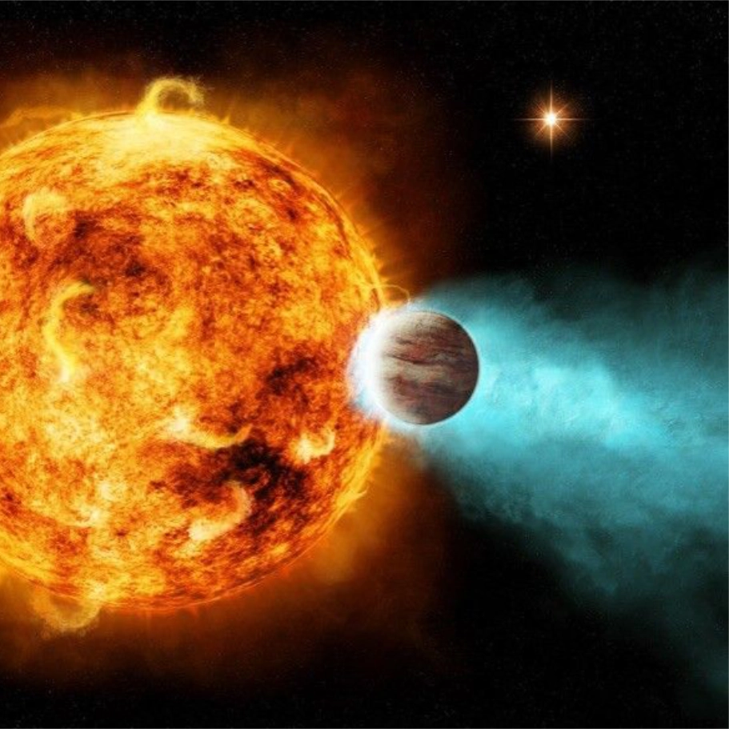

= 90rem) 25.75rem, (width >= 61.25rem) 12.875rem, calc(100vw - 4rem)" >Gas giant
A gas giant is a large planet mostly composed of helium and/or hydrogen. These planets, like Jupiter and Saturn in our solar system, don’t have hard surfaces and instead have swirling gases above a solid core. Gas giant exoplanets can be much larger than Jupiter, and much closer to their stars than anything found in our solar system.
A gas giant is a large planet mostly composed of helium and/or hydrogen. These planets, like Jupiter and Saturn in our solar system, don’t have hard surfaces and instead have swirling gases above a solid core. Gas giant exoplanets can be much larger than Jupiter, and much closer to their stars than anything found in our solar system.
For most of human history our understanding of how planets form and evolve was based on the eight planets in our solar system. But over the last 25 years, the discovery of more than 5,600 exoplanets, or planets outside our solar system, changed all that.
Gas giants, like Jupiter or Saturn in our solar system, are composed mostly of helium and/or hydrogen. Gas giants nearer to their stars are often called “hot Jupiters.” More variety is hidden within these broad categories. Hot Jupiters, for instance, were among the first exoplanet types found – gas giants like Jupiter, yes, but orbiting so close to their stars that their temperatures soar into the thousands of degrees (Fahrenheit or Celsius). These large planets make such tight orbits that they cause a pronounced “wobble” in their stars, tugging their stellar hosts this way and that, and causing a measurable shift in the spectrum of light from the stars. That made hot Jupiters easier to detect in the early days of planet hunting using the radial velocity method.
Similar in size to Jupiter, these gas-dominated planets orbit extremely close to their parent stars, circling them in as few as 18 hours. We have nothing like them in our own solar system, where the closest planets to the Sun are rocky and orbiting much farther away. The questions about hot Jupiters are as big as the planets themselves: Do they form close to their stars or farther away before migrating inward? And if these giants do migrate, what would that reveal about the history of the planets in our own solar system?
To answer those questions, scientists will need to observe many of these hot giants very early in their formation. The detection of the exoplanet HIP 67522 b, thought to be the youngest hot Jupiter ever found (in June 2020), could expand our understanding. It orbits a well-studied star that is about 17 million years old, meaning the hot Jupiter is likely only a few million years younger, whereas most known hot Jupiters are more than a billion years old. The planet takes about seven days to orbit its star, which has a mass similar to the Sun's. Located only about 490 light-years from Earth, HIP 67522 b is about 10 times the diameter of Earth, or close to that of Jupiter. Its size strongly indicates that it is a gas-dominated planet.
The discovery offers hope for finding more young hot Jupiters and learning more about how planets form throughout the universe.